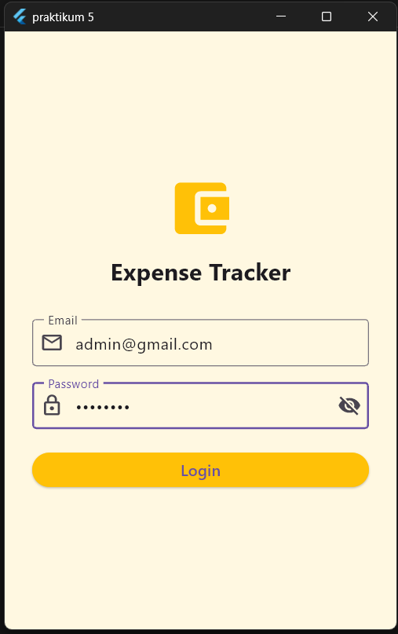
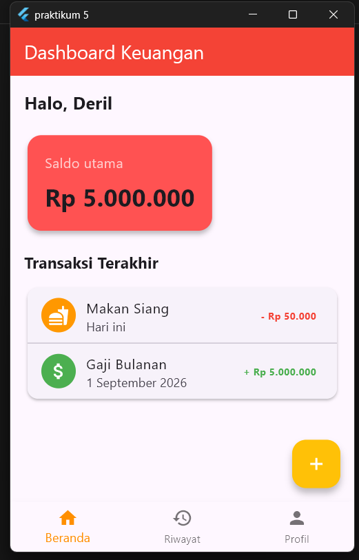
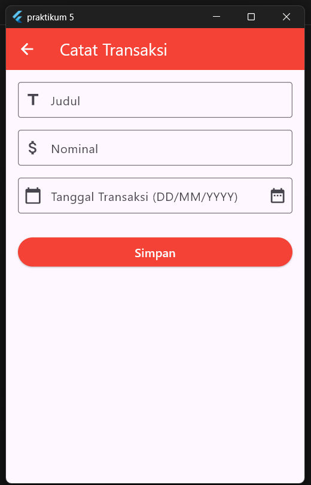
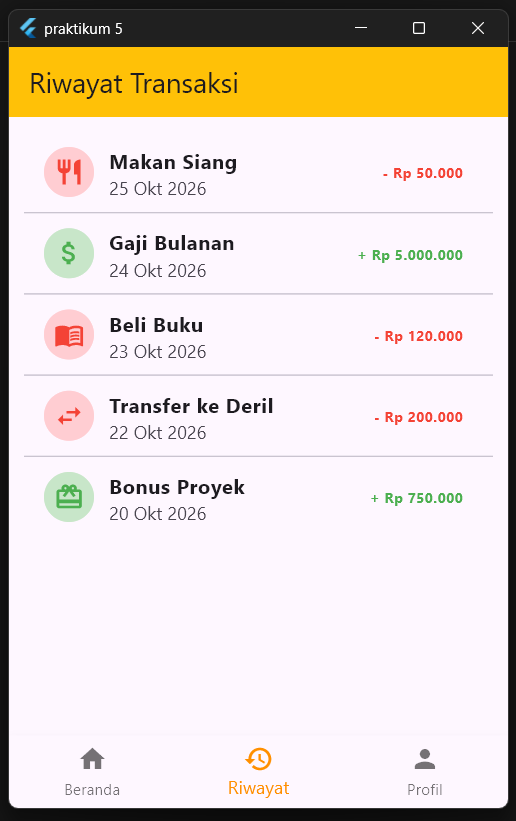
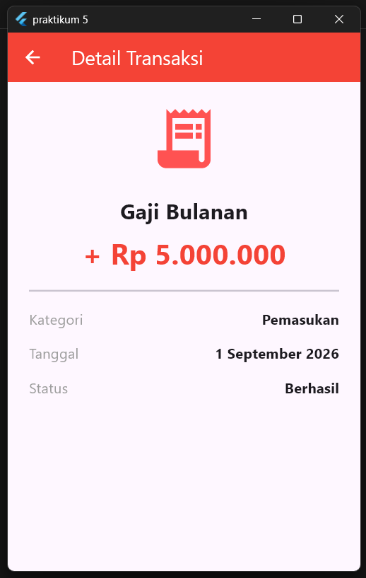
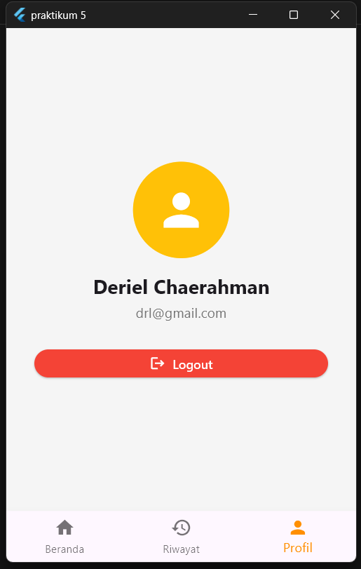

Arsitektur Navigasi
(Named Routes & Bottom Navigation Bar)
Dibuat : Oktober 2026
Repository GitHub
Praktikum ini melanjutkan aplikasi Expense Tracker dari Praktikum 4 yang
sebelumnya telah menggunakan Navigator.push dan
MaterialPageRoute untuk perpindahan antar halaman. Pada Praktikum 5,
navigasi diubah
menjadi lebih terstruktur menggunakan Named Routes, yaitu sistem
penamaan rute berbasis String yang didaftarkan terpusat di
MaterialApp, untuk mencegah spaghetti code ketika aplikasi
memiliki banyak layar.
Kemudian aplikasi menambahkan BottomNavigationBar
sebagai tab yang ditampilkan bawah halaman, dengan mengintegrasikan tiga halaman utama
yaitu, Dashboard, Riwayat,
dan Profil dalam satu wadah (MainScreen) tanpa perlu berpindah
Scaffold. Sebagai pelengkap tugas praktikum, ditambahkan pula halaman
Login yang mengirimkan data email pengguna ke halaman utama melalui
Constructor, menggabungkan konsep passing data dari Praktikum 4 dengan arsitektur
navigasi baru ini.
BottomNavigationBar) ala aplikasi modern.
MainScreen).MaterialApp. Alih-alih
memanggil Navigator.push(MaterialPageRoute(...)) berulang
kali di banyak tempat, setiap halaman cukup didaftarkan sekali di
properti routes, lalu dipanggil dengan
Navigator.pushNamed(context, '/namaRute'). Pendekatan ini
mencegah spaghetti code saat aplikasi memiliki banyak layar
karena seluruh peta navigasi terpusat di satu tempat.
routes adalah sebuah
Map<String, WidgetBuilder>
yang berfungsi sebagai tabel peta rute aplikasi — setiap key berupa nama
rute (misalnya '/add') dipasangkan dengan fungsi yang
mengembalikan widget halaman tujuan. Sementara itu,
initialRoute menentukan halaman pertama yang dimuat saat
aplikasi dibuka, umumnya diisi dengan '/'. Parameter
home pada MaterialApp harus dihapus ketika
initialRoute digunakan agar tidak terjadi konflik.
currentIndex adalah indeks tab yang sedang aktif (0, 1,
atau 2), yang nilainya disimpan dalam variabel state karena akan selalu
berubah-ubah saat pengguna berpindah tab — sehingga
MainScreen wajib berupa StatefulWidget.
Callback onTap dipanggil setiap kali sebuah tab diketuk,
biasanya memanggil setState() untuk memperbarui
currentIndex. Properti items berisi daftar
BottomNavigationBarItem yang masing-masing memiliki
icon dan label untuk ditampilkan pada menu.
A. Mendaftarkan Named Routes
(main.dart)
Parameter home pada MaterialApp dihapus dan diganti
dengan initialRoute serta routes. Rute '/'
menunjuk ke LoginScreen sebagai halaman pertama, rute '/home'
menunjuk ke MainScreen (layar ber-tab), dan rute '/add'
menunjuk ke AddTransactionScreen.
import 'package:flutter/material.dart';
import 'main_screen.dart';
import 'login_screen.dart';
import 'add_transaction_screen.dart';
void main() {
runApp(const MyApp());
}
class MyApp extends StatelessWidget {
const MyApp({super.key});
@override
Widget build(BuildContext context) {
return MaterialApp(
debugShowCheckedModeBanner: false,
title: 'Expense Tracker Final',
theme: ThemeData(primarySwatch: Colors.amber),
// MENGGUNAKAN NAMED ROUTES
initialRoute: '/',
routes: {
'/': (context) => const LoginScreen(),
'/home': (context) => const MainScreen(),
'/add': (context) => const AddTransactionScreen(),
},
);
}
}B. Kolom Tab menggunakan
BottomNavigationBar (main_screen.dart)
MainScreen dijadikan StatefulWidget karena tab yang aktif
akan selalu berubah-ubah nilainya. Variabel _selectedIndex menyimpan
indeks tab aktif, sementara _pages berisi daftar tiga halaman
(Dashboard, Riwayat, Profil) yang ditukar sesuai tab yang dipilih, tanpa berpindah
Scaffold.
import 'package:flutter/material.dart';
import 'dashboard_screen.dart';
import 'history_screen.dart';
import 'profile_screen.dart';
class MainScreen extends StatefulWidget {
final String? userEmail;
const MainScreen({super.key, this.userEmail});
@override
State<MainScreen> createState() => _MainScreenState();
}
class _MainScreenState extends State<MainScreen> {
int _selectedIndex = 0; // Tab pertama aktif (Beranda)
// Daftar layar yang disuntikkan ke body
late final List<Widget> _pages = [
DashboardScreen(userEmail: widget.userEmail),
const HistoryScreen(),
const ProfileScreen(),
];
void _onItemTapped(int index) {
setState(() {
_selectedIndex = index;
});
}
@override
Widget build(BuildContext context) {
return Scaffold(
// Body menampilkan widget sesuai index tab
body: _pages[_selectedIndex],
bottomNavigationBar: BottomNavigationBar(
currentIndex: _selectedIndex,
onTap: _onItemTapped,
selectedItemColor: Colors.amber[800],
items: const [
BottomNavigationBarItem(icon: Icon(Icons.home), label: 'Beranda'),
BottomNavigationBarItem(icon: Icon(Icons.history), label: 'Riwayat'),
BottomNavigationBarItem(icon: Icon(Icons.person), label: 'Profil'),
],
),
);
}
}C. Update FloatingActionButton di
dashboard_screen.dart
Tombol FloatingActionButton yang sebelumnya memanggil
Navigator.push(MaterialPageRoute(...)) diganti menjadi
Navigator.pushNamed yang memanggil rute '/add' yang
sudah didaftarkan di main.dart.
floatingActionButton: FloatingActionButton(
backgroundColor: Colors.amber,
child: const Icon(Icons.add),
onPressed: () {
// Memanggil Rute yang sudah didaftarkan di main.dart
Navigator.pushNamed(context, '/add');
},
),Tiga tugas sebagai pelengkap arsitektur navigasi: halaman Riwayat Transaksi, halaman Profil, dan halaman Login dengan passing data email.
1. Halaman Riwayat Transaksi
(history_screen.dart)
Menampilkan daftar transaksi menggunakan ListView.separated, dengan
setiap baris berupa ListTile yang memiliki ikon lingkaran berwarna
hijau (pemasukan) atau merah (pengeluaran) sesuai nilai nominal transaksi.
class HistoryScreen extends StatelessWidget {
const HistoryScreen({super.key});
@override
Widget build(BuildContext context) {
final transactions = [
{"title": "Makan Siang", "amount": -50000, "icon": Icons.restaurant},
{"title": "Gaji Bulanan", "amount": 5000000, "icon": Icons.attach_money},
// ...data transaksi lainnya
];
return Scaffold(
appBar: AppBar(title: const Text("Riwayat Transaksi")),
body: ListView.separated(
itemCount: transactions.length,
separatorBuilder: (context, index) => const Divider(),
itemBuilder: (context, index) {
final tx = transactions[index];
final isIncome = tx["amount"] > 0;
return ListTile(
leading: CircleAvatar(
backgroundColor: isIncome ? Colors.green[100] : Colors.red[100],
child: Icon(tx["icon"], color: isIncome ? Colors.green : Colors.red),
),
title: Text(tx["title"]),
trailing: Text("${isIncome ? '+' : '-'} Rp ${tx['amount']}"),
);
},
),
);
}
}2. Halaman Profil
(profile_screen.dart)
Menampilkan avatar, nama, dan email pengguna secara terpusat, dilengkapi tombol
Logout yang menggunakan pushNamedAndRemoveUntil agar
seluruh riwayat navigasi (stack) dihapus dan pengguna tidak bisa menekan tombol
back kembali ke halaman utama setelah logout.
class ProfileScreen extends StatelessWidget {
const ProfileScreen({super.key});
@override
Widget build(BuildContext context) {
return Scaffold(
body: Center(
child: Column(
mainAxisAlignment: MainAxisAlignment.center,
children: [
const CircleAvatar(
radius: 55,
child: Icon(Icons.person, size: 60),
),
const Text("Budi Santoso", style: TextStyle(fontSize: 22)),
Text("budi.santoso@email.com"),
ElevatedButton.icon(
onPressed: () {
// Hapus seluruh stack navigasi, kembali ke Login
Navigator.pushNamedAndRemoveUntil(
context, '/', (route) => false,
);
},
icon: const Icon(Icons.logout),
label: const Text("Logout"),
),
],
),
),
);
}
}3. Halaman Login dengan Passing Data
(login_screen.dart)
Berisi TextField email dan password serta tombol Login. Saat tombol
diketuk, nilai email diambil dari TextEditingController dan dikirim
ke MainScreen melalui Constructor, lalu ditampilkan
di halaman Dashboard. Berpindah halaman menggunakan
Navigator.pushReplacement agar pengguna tidak bisa menekan back ke
halaman Login.
void _login() {
final email = _emailController.text.trim();
if (email.isEmpty || _passwordController.text.isEmpty) {
ScaffoldMessenger.of(context).showSnackBar(
const SnackBar(content: Text("Email dan password tidak boleh kosong")),
);
return;
}
// Pindah ke MainScreen sambil membawa data email
Navigator.pushReplacement(
context,
MaterialPageRoute(builder: (context) => MainScreen(userEmail: email)),
);
}Aplikasi Praktikum 5 terdiri dari lima layar yang terhubung melalui Named Routes dan Bottom Navigation Bar:






Melalui Praktikum 5 ini, aplikasi Expense Tracker berhasil dikembangkan
dari navigasi berbasis Navigator.push langsung di Praktikum 4, menjadi
arsitektur navigasi yang lebih terstruktur dan skalabel.
main.dart), membuat kode lebih rapi dan mudah dikembangkan saat
jumlah halaman bertambah.Scaffold.MainScreen meski alur
navigasi sudah berbasis nama rute, membuktikan kedua konsep dapat digabungkan.